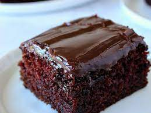

Chocolate Cake

Ingredients
- 2 1/2 cups flour
- 1 teaspoon salt
- 1 teaspoon sugar
- 1 tablespoon fast rise yeast
- 1 cup water(120*)
- 1 tablespoon oil
- In large bowl, mix first 4 ingredients.
Mix water and oil; add to flour mixture.
Turn onto floured surface; knead for 2 minutes.
Place in a greased bowl; turning to grease top.
Cover and let rise for 20 minutes.
Punch down; place on 12in, greased pizza pan.
- Pat into a circle.
Topping: Mix first 5 ingredients and spread over crust.
Put a few pepperoni slices on top of sauce.
Sprinkle with 1/2 the mozzeralla; 1/2 the monterey jack, and 1/2 the parmesan.
Put the rest of the pepperoni on.
Repeat the cheese layer.
Bake at 400* for 20 minutes or until light brown.